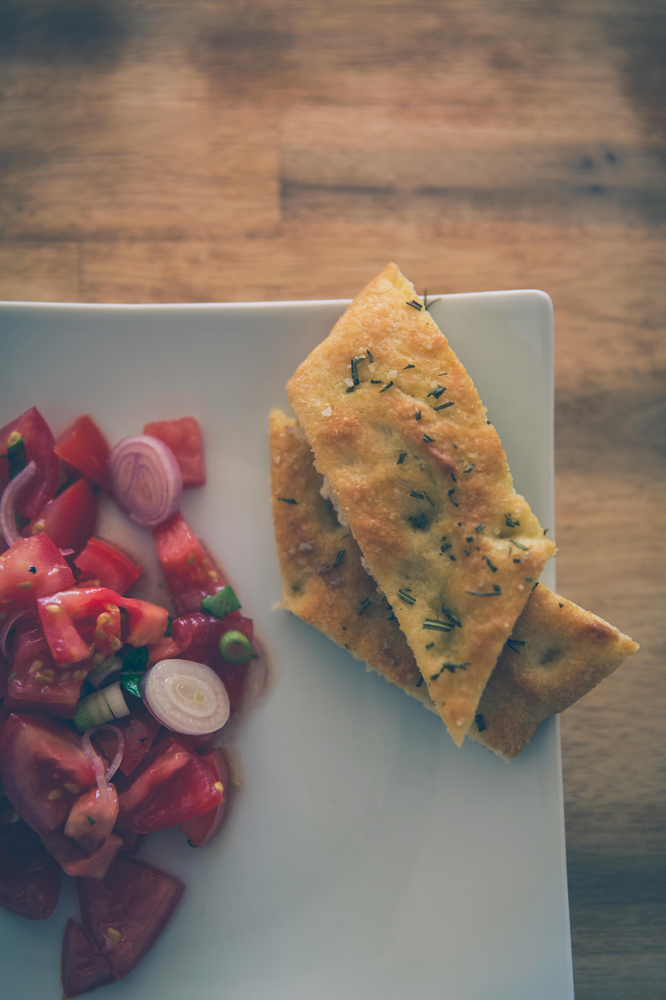

Focaccia
Make a simple, homemade version of this classic Italian bread. Serve our rosemary focaccia alongside pasta dishes or enjoy with green salads.
- Serves 12
- 25 mins to prepare and 20 mins to cook
- Easy
Source: bbcgoodfood.com
Ingredients:
- 500g strong bread flour, plus extra for dusting
- 7g dried fast action yeast
- 2 tsp fine sea salt
- 5 tbsp olive oil, plus extra for the tin and to serve
- 1 tsp flaky sea salt
- ¼ small bunch of rosemary, sprigs picked
Method
- Tip the flour into a large mixing bowl. Mix the yeast into one side of the flour, and the fine salt into the other side. Then mix everything together, this initial separation prevents the salt from killing the yeast.
- Make a well in the middle of the flour and add 2 tbsp oil and 350-400ml lukewarm water, adding it gradually until you have a slightly sticky dough (you may not need all the water). Sprinkle the work surface with flour and tip the dough onto it, scraping around the sides of the bowl. Knead for 5-10 mins until your dough is soft and less sticky. Put the dough into a clean bowl, cover with a tea towel and leave to prove for 1 hr until doubled in size.
- Oil a rectangle, shallow tin (25 x 35cm). Tip the dough onto the work surface, then stretch it to fill the tin. Cover with a tea towel and leave to prove for another 35-45 mins.
- Heat the oven to 220C/200C fan/gas 7. Press your fingers into the dough to make dimples. Mix together 1½ tbsp olive oil, 1 tbsp water and the flaky salt and drizzle over the bread. Push sprigs of rosemary into the dimples in the dough.
- Bake for 20 mins until golden. Whilst the bread is still hot, drizzle over 1-2 tbsp olive oil. Cut into squares and serve warm or cold with extra olive oil, if you like.